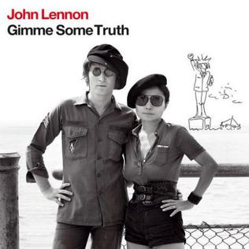
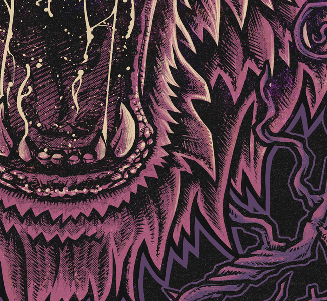
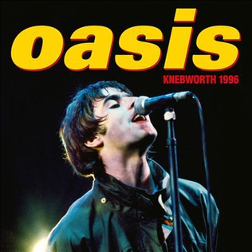

JOHN LENNON
 |
 | ||
|---|---|---|---|
| Plastic Ono Band | Gimme Some Truth | Imagine | Live Peace In Toronto 1969 |
Per ascoltare altri suoi album clicca qui.
OZZY OSBOURNE
 |
 |  |
|
|---|---|---|---|
| Patient Number 9 | Diary of a Madman | Live Evil | Mob Rules |
Per ascoltare altri suoi albumclicca qui o qui per gli altri album dei Black Sabbath
NOEL GALLAGHER
|  |  |
||
|---|---|---|---|
| Council Skies | Back the Way We Came Vol. 1 | Oasis Knebworth 1996 | Dig Out Your Soul |
Per ascoltare altri suoi albumclicca qui o qui per altri album degli Oasis
MIKA


Per ascoltare altri suoi album clicca qui.
ROBBIE WILLIAMS

Per ascoltare altri suoi album clicca qui.
CHER
Per ascoltare altri suoi album clicca qui.
LEE RYAN (Blue)

Per ascoltare altri suoi album clicca qui.
IMMANUEL CASTO
Per ascoltare altri suoi album clicca qui.